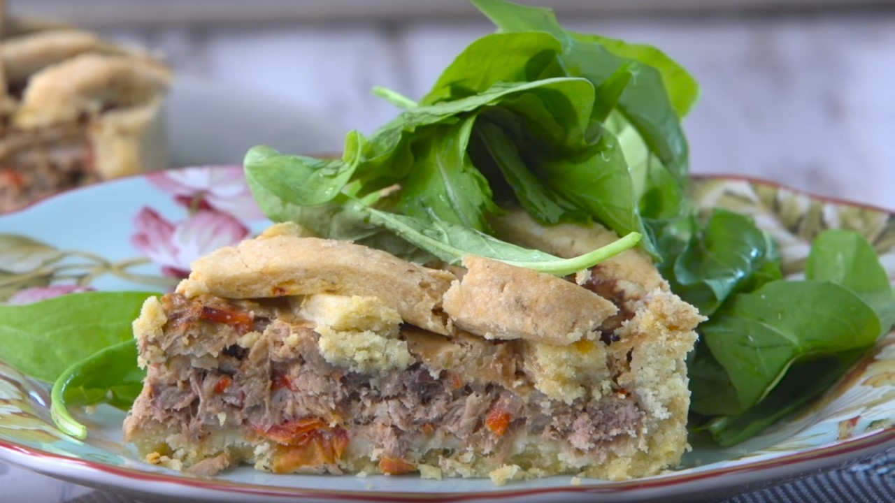

Crostata de atún

Ingredientes
Para la masa
- 500 g de harina 000.
- 200 g más de harina para estirar la masa.
- 150 g de manteca.
- 80 cc de aceite de oliva.
- 2 yemas de huevo.
- Sal fina y pimienta blanca molida, a gusto.
- 2 cdas de ají molido.
Para el relleno
- 3 cdas de aceite de oliva.
- 3 cebollas fileteadas.
- 2 pimientos colorados cortados en tiras finas.
- 2 dientes de ajo pelados, sin brote y picados.
- 4 tomates con piel, semillas y pulpa y cortados en cubos.
- Una cda de pimentón dulce.
- 2 latas de atún al natural, escurrido.
- Una taza de aceitunas negras descarozadas y fileteadas.
- Sal fina y pimienta blanca molida, a gusto.
- 2 cdas de perejil picado.
- Un huevo diluido en agua.
Procedimiento
- En un bowl, poner harina común de trigo, la manteca blanda cortada en cubos, aceite de oliva, dos yemas
de huevo, sal fina, pimienta blanca molida y ají molido.
- Comenzar a mezclar con la intención de unir los ingredientes y generar un bollo, liso y uniforme.
- Si fuese necesario, agregar un poco de agua para uniformar el bollo.
- Estirar la masa con un palote, espolvoreando la mesada con un poco de harina hasta lograr un espesor de
unos 4 milímetros, aproximadamente, una masa rústicam y gruesa.
- Reservar un poco de masa para hacer las tiras que pondremos sobre el relleno al final del armado de la
crostata.
- Cubrir la masa estirada con un lienzo y seguir con el relleno.
- En una sartén caliente con aceite de oliva, saltear las cebollas fileteadas, los pimientos en tiras y
los ajos picados finamente hasta transparentarlos.
- Salpimentar mientras estamos salteando los vegetales.
- Agregar los tomates, simplemente cortados en cubos, sin necesidad de pelarlos ni despepitarlos.
Rectificar con sal.
- Cocinar por unos minutos hasta que los tomates se ablanden un poco.
- Adicionar el pimentón dulce.
- Incorporar el atún en conserva al natural, previamente algo escurrido y mezclar bien con cuchara de
madera.
- Adicionar las aceitunas negras fileteadas y lógicamente descarozadas. Sumar el perejil picado.
- Aceitar un poco la asadera de la que hemos hablado. Forrarla con la masa estirada.
- Rellenar con la preparación de cebollas, pimientos y atún.
- Sobre la superficie del relleno, colocar algunas tiras de masa formando una especie de cuadriculado
similar al de una pasta frola.
- Pincelar con yema de huevo diluida en agua para lograr un dorado más intenso durante la cocción.
- Precalentar el horno a máxima temperatura por unos 15 minutos y cocinar durante aproximadamente 25
minutos o hasta que la masa esté bien dorada.
- Retirar del horno y dejar templar.